Relier le problème utilisateur à l’objectif business
J’ai traduit une demande de fonctionnalités sociales en un problème de reconnaissance et de rétention.
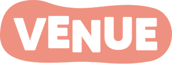
ÉTUDE DE CAS · RÉTENTION · JEU MOBILEVenue, développé par Superbloom, est un jeu mobile de décoration où plus de 800 000 joueuses actives chaque mois créent des pièces et votent pour celles des autres. Le défi à relever en un sprint de 2 semaines : comment leur donner une vraie raison de revenir, sans leur ajouter de tâches supplémentaires ?
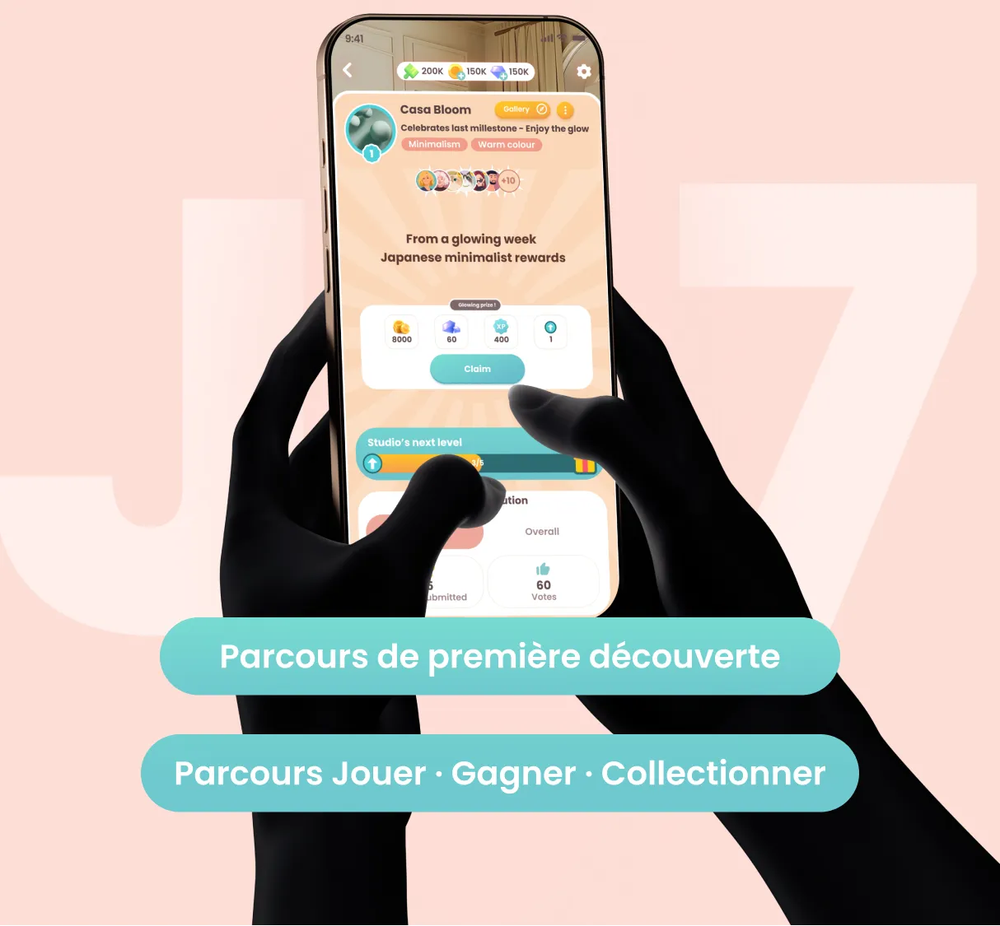
Les joueuses créaient et votaient, mais ces interactions ne construisaient pas de lien social entre elles. Leur activité avait une valeur individuelle dans le jeu, sans devenir une expérience collective.
Durant les deux semaines, mon rôle n’était pas d’inventer des « fonctionnalités sociales ». Il s’agissait de concevoir une couche sociale qui renforce la rétention sans changer le comportement de base qui fonctionnait déjà.
Venue est un jeu mobile de décoration d’intérieur : les joueurs y aménagent des pièces, soumettent leurs créations et votent pour celles des autres. Le jeu comptait déjà plus de 4 millions de téléchargements sur les stores, une communauté majoritairement féminine et des habitudes de jeu quotidiennes bien installées.
Les retours collectés par Superbloom (groupe Facebook de 30 000 membres, sondages, avis sur les stores) montraient que les joueuses voulaient plus de social. L’audit du jeu et les tests avec des joueuses l’ont précisé : elles s’impliquaient dans leurs créations et voulaient se sentir valorisées dans leurs choix. Quand elles votaient à leur tour, elles voulaient que leur vote ait du sens.
« Le problème n’était pas un manque d’engagement. Il manquait au produit une boucle de retour social qui donne du sens à l’activité des joueurs. »— Brief de Superbloom
L’analyse de l’expérience existante et du persona Beth a permis de distinguer les besoins à satisfaire des exigences à respecter pour concevoir une nouvelle expérience sociale.
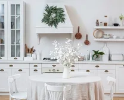
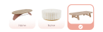
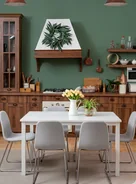
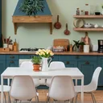
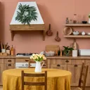
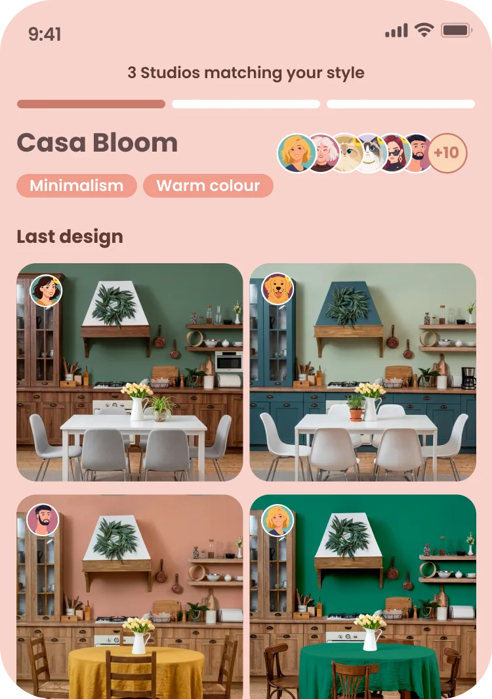
Pour combler la valeur manquante, la reconnaissance, j’ai conçu le Design Studio : un petit groupe de 10 à 20 joueuses réunies autour d’un même style de décoration.
Ce format permet de créer un groupe à taille humaine, avec un intérêt commun comme premier point de connexion. Les joueuses font progresser leur Studio grâce à leurs actions habituelles, sans avoir à adopter de nouvelles tâches.
Pour que la joueuse s’intègre à ce mécanisme à chaque étape (découverte, adhésion, routine), j’ai analysé ses besoins psychologiques et cartographié son parcours dans une user journey map.
Le système de vote devait répondre à deux attentes : permettre à celle qui vote de savoir que son appréciation compte, et donner à celle qui reçoit un vote une indication sur ce qui a été apprécié dans sa création.
J’ai intégré des retours prédéfinis (composition, couleurs, lumière, matières) directement dans le parcours de vote et dans une nouvelle galerie accessible depuis le Studio. La joueuse peut ainsi exprimer ce qu’elle a apprécié, tandis que celle qui reçoit le retour comprend mieux ce qui a retenu l’attention.
Mais le vote reste une interaction éphémère. La galerie donne une autre dimension à ces échanges : les créations des membres restent accessibles dans le Studio. Chacune peut y revenir, découvrir les réalisations des autres et leur laisser un retour.
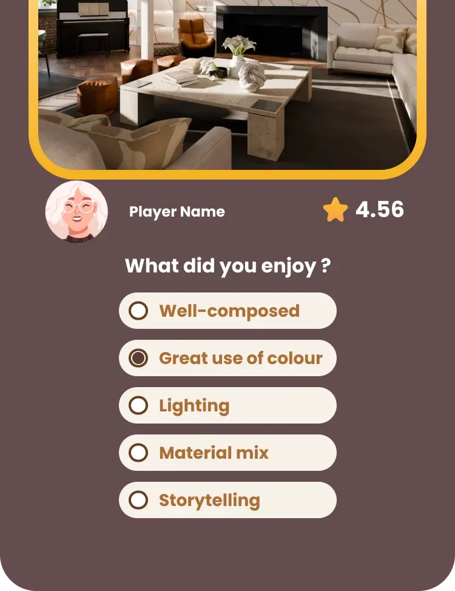
L’adhésion constitue un moment décisif : une invitation trop engageante pourrait freiner une joueuse comme Beth, qui vient avant tout pour se détendre. J’ai donc conçu cette entrée comme un prolongement naturel de l’expérience, avec une invitation à « Jouer avec ce Studio » plutôt qu’à « Rejoindre » un groupe.
L’invitation apparaît après une étape importante du jeu, lorsque la joueuse est déjà familiarisée avec ses mécaniques.
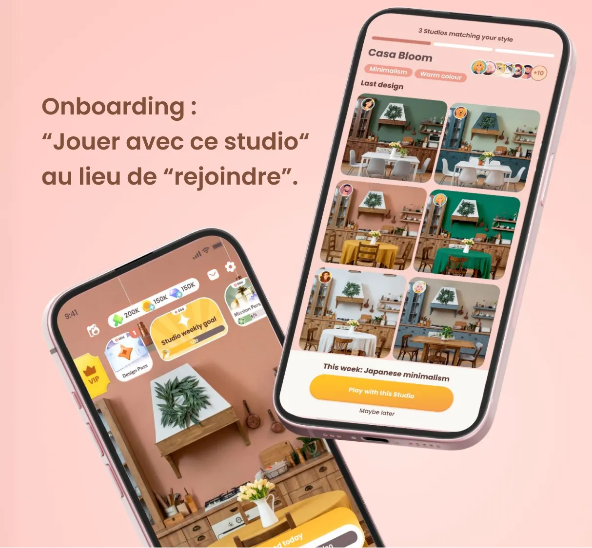
Pour faire revenir les joueurs, deux mécaniques prennent le relais l’une de l’autre : la première donne au joueur une raison de revenir dès la première semaine (J7), la seconde l’attache à son groupe dans la durée (J30).
Une fois membre d’un Design Studio, la joueuse sait que ce qu’elle fait au quotidien profite désormais à son groupe. En créant, en soumettant ou en votant, elle gagne des clés, qui font avancer le défi de la semaine et donnent accès à une récompense commune.
Chaque Studio possède une salle qui évolue avec le niveau du groupe. Chaque membre la décore à son style, et toutes les décorations sont réunies dans une galerie visible par tous. Avec le temps, le style de chacune devient une identité que le groupe reconnaît. Le niveau suivant se déverrouille avec une flèche, la récompense obtenue en réussissant le défi hebdomadaire. La progression du Studio devient ainsi le résultat visible de leurs contributions.
J’ai traduit une demande de fonctionnalités sociales en un problème de reconnaissance et de rétention.
J’ai relié découverte, adhésion, contribution et progression dans un même système.
J’ai conçu des interactions sociales compatibles avec l’architecture actuelle du jeu et l’absence de modération.
Note : il s’agissait d’un concept de design de phase 2, destiné à être évalué par l’équipe de développement. Les résultats ci-dessus sont donc des objectifs de validation, pas des résultats mesurés en production.
Les meilleures décisions sont venues du fait de définir le problème utilisateur et business avant les mécaniques : quand les joueurs ont besoin de reconnaissance, quel effort ils sont prêts à fournir, et ce que le produit peut supporter sans risque.
Mon rôle est passé de la conception d’« écrans sociaux » à la conception d’un système de rétention construit autour des comportements existants.
Lead UX & Product Designer · Yummy Labs × Superbloom · Sprint de 2 semaines · Top Sprinter, mars 2026
« Chaque soir, Beth ferme Venue et ouvre Facebook. »
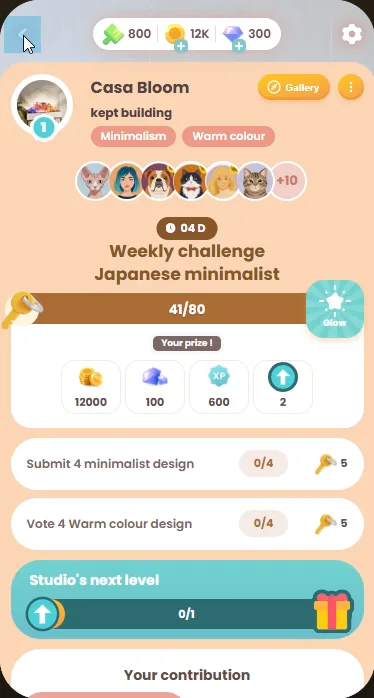
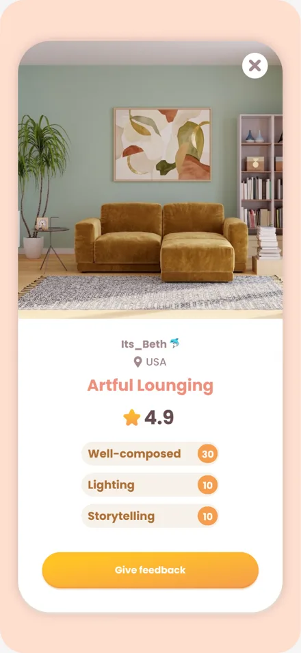
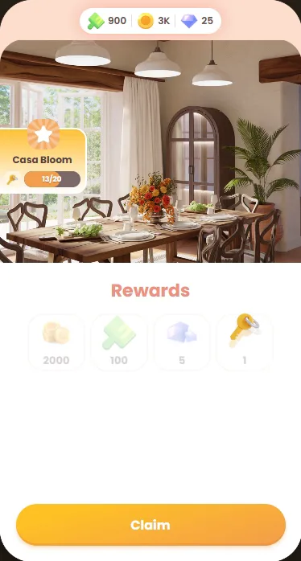
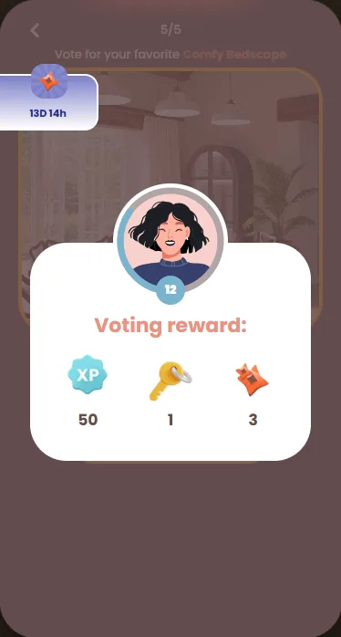
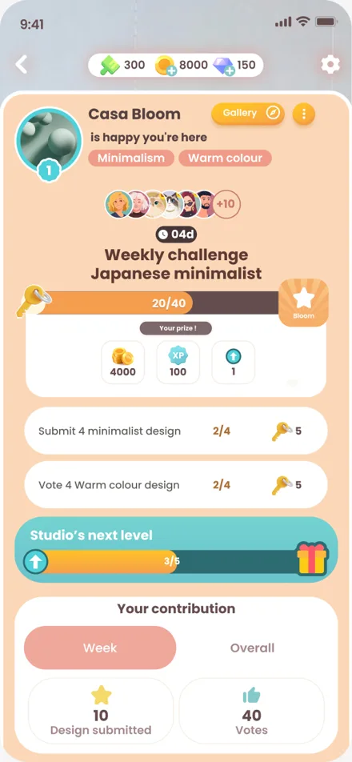
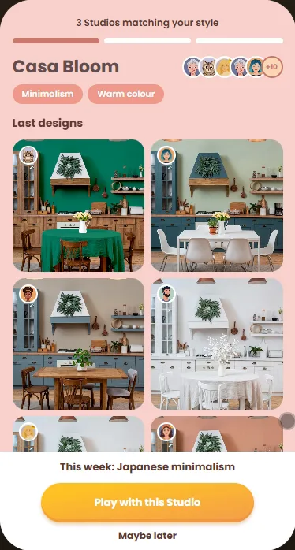
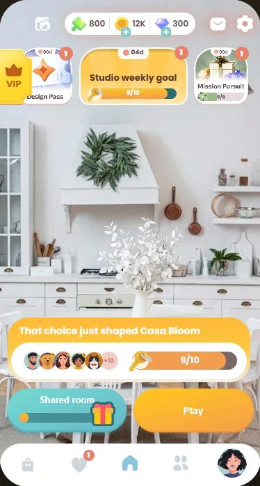
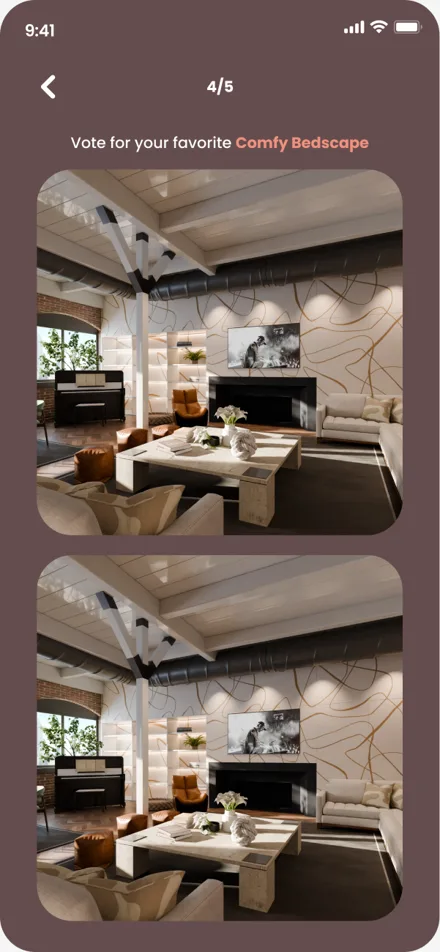
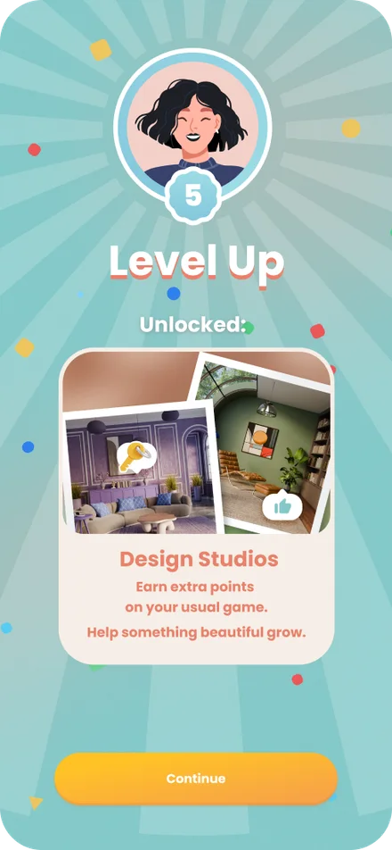
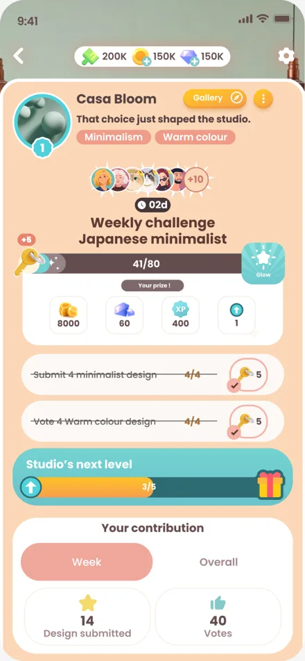
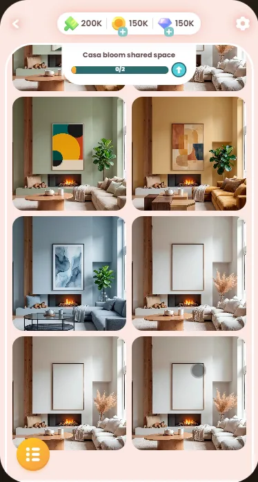
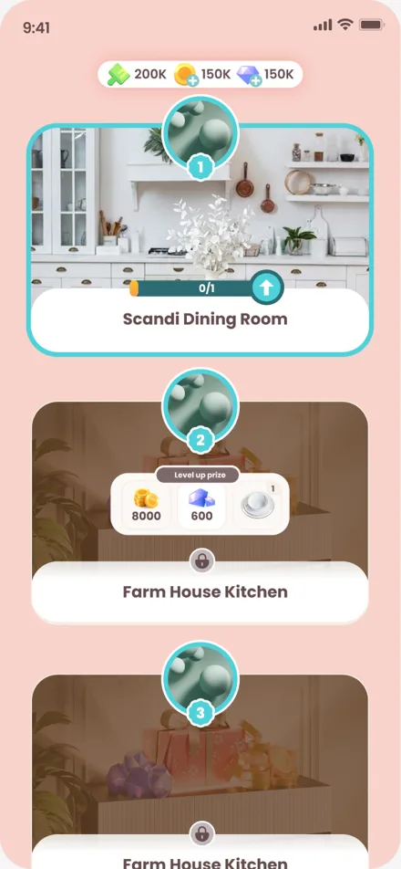
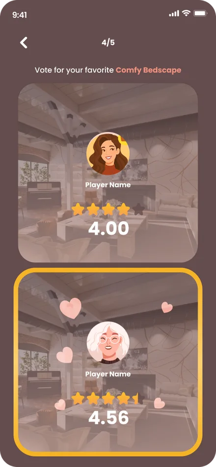
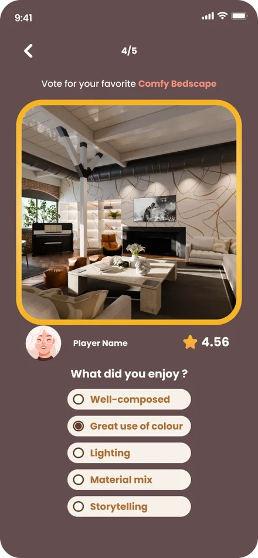
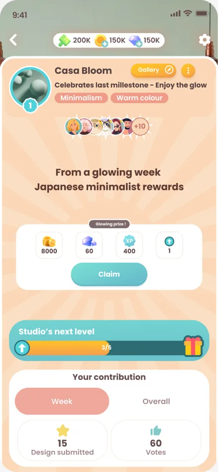
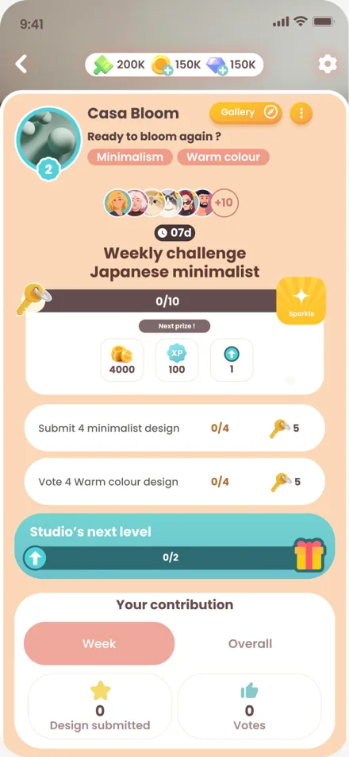